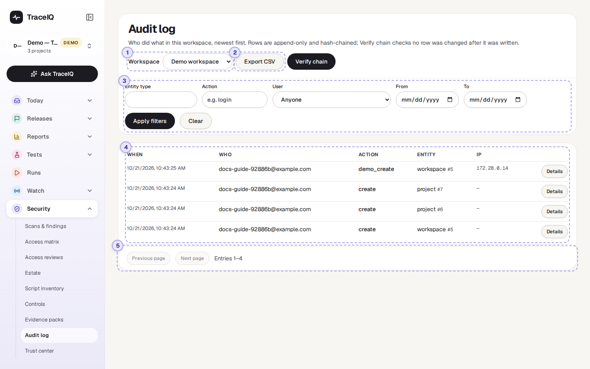
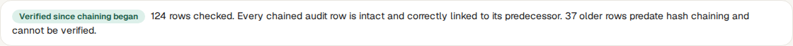
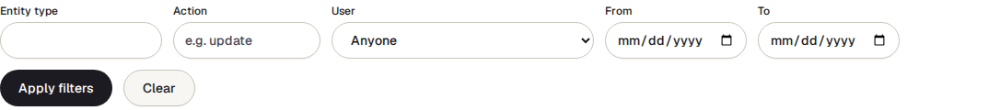
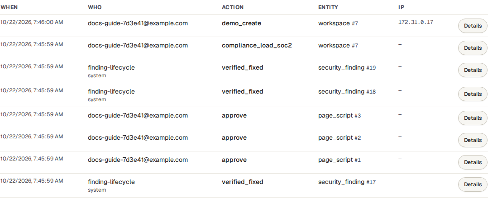
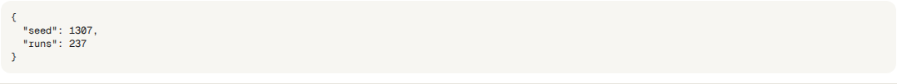
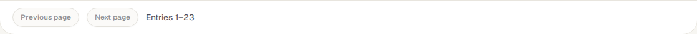

Audit log
A diary TraceIQ keeps of everything important that happens in a workspace: who created or changed a test, who removed someone's access, what TraceIQ did by itself. Nobody can edit or delete its entries, and a button checks that none has been changed afterwards.
What it is for
An audit log (or audit trail) answers "Who did this, and when?" after the fact: when a test disappeared, when someone's access changed, or when an auditor asks you to show that access to sensitive settings is recorded. Security standards (SOC 2, ISO 27001, PCI DSS) require one, and require that it can't be quietly rewritten.
TraceIQ's log is append-only: entries are only ever added. Each entry also carries a fingerprint of the entry before it, like links in a chain, so changing one old entry would break every link after it, and the Verify chain check would show where.
Workspace admins
Find out who changed or deleted something, and when.
Security teams
Look into an unexpected change of access or settings.
Auditors
Get a complete, verifiable record for a period.
Where to find it: in the sidebar, open Security → Audit log.
A tour of the screen
The page shows the newest entries first. The numbers on the screenshot match the sections below.

Workspace
Each workspace has its own log. The page shows the workspace of the project selected in the sidebar; pick another here. The menu only appears if you belong to more than one workspace.
Export CSV and Verify chain
- Export CSV downloads the entries that match the current filters as a spreadsheet file, oldest first, for an auditor or a security monitoring tool. It contains every matching entry, not just the 50 on screen.
- Verify chain checks every link of the chain and shows the result above the table:

The chain runs through the whole server's audit trail, not just this workspace, so the number of rows checked is larger than the number of entries you can see. If the check fails it shows Chain broken, the first bad entry and whether it is in this workspace. Entries written before the chain was introduced can't be checked; they are counted separately and the rest of the trail is still checked (Verified since chaining began).
Filters

- Entity type: what kind of thing the entry is about, for example
project,case,api_key,access_revieworsecurity_finding. The box suggests common ones as you type. - Action: what was done, typed exactly, for example
create,deleteorstatus_change. - User: one member of the workspace.
- From and To: whole days, in UTC.
Filters take effect when you press Apply filters (or Enter); Clear removes them all.
The entries

| Column | What it shows |
|---|---|
| When | The date and time, in your browser's time zone. |
| Who | The person's email address. When it wasn't a person, it names what did it (for example finding-lifecycle when TraceIQ reopened a finding, or a directory sync) and says what kind of actor that was: system, an API key, and so on. |
| Action | What happened, for example create, status_change, sign_off. |
| Entity | The kind of thing and its number, for example project #6. |
| IP | The network address the request came from, when it was recorded. |
| Details | Shows exactly what changed (before and after values). |

Pages

The table shows 50 entries at a time. Next page and Previous page move through older and newer ones; the line next to them says which entries you are looking at.
Watch it in use
How to…
…find out who deleted something
- Type
deleteunder Action, and the kind of thing (for examplecase) under Entity type. - Set From and To around when it disappeared, and press Apply filters.
- Press Details on the entry to see its name and other values.
…see everything one person did
- Choose them under User and press Apply filters.
- Use Next page to go further back.
…give an auditor the log for a period
- Set From and To and press Apply filters.
- Press Verify chain and keep a screenshot of the result.
- Press Export CSV. An Evidence pack includes the same log with a signed list of files, if the auditor wants more.
Good to know
- Nobody can edit it. The database itself refuses to change an entry, and refuses to delete one except for the retention clean-up, if your server has one set up (by default entries are kept forever).
- Secrets are not written down. Passwords, tokens and similar values are removed from an entry's details before it is saved.
- Entries outlive what they describe. A deleted project or a removed user still has their entries, so the history stays complete.
- Sign-ins are not here. Sign-in entries aren't tied to a workspace, so this page doesn't show them. Only changes made in this workspace appear.
- Who can see it. Only workspace admins (people allowed to manage the workspace's members). Everyone else is refused, because the log shows who did what across the whole workspace.
- It doesn't refresh by itself. Reload the page, or press Apply filters again, to see new entries.
Related pages
Trust center
The next page in this guide: a public page that can show the date of your last audit-chain check.
Evidence packs
The audit log for a period, packed with your other records and signed.
Controls
One control source checks that this log's chain verifies.
Access reviews
Reviews whose every decision and sign-off is recorded here.